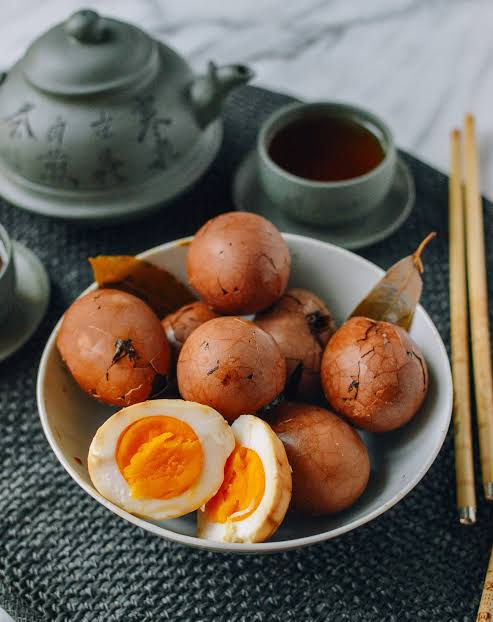

Tea Egg
Home

Description
The hard-boiled eggs are subtly flavored with anise and have a deep brown hue from black tea and soy. The marbled patterns from the cracked shells make these quite attractive.
Ingredients
- 3 cups water
- 2 tablespoons black tea leaves
- 1 tablespoon soy sauce
- 1 tablespoon black soy sauce
- 1 tablespoon tangerine zest
- 1 (2-inch) piece cinnamon stick
- 2 pods star anise
- 1 ¼ teaspoons salt, divided
- 8 large eggs
Steps
- Gather all ingredients.
- Combine 3 cups water, tea leaves, soy sauce, black soy sauce, zest, cinnamon stick, star anise, and 1/4 teaspoon salt in a large saucepan; bring to a boil. Reduce heat, cover, and simmer for 3 hours.
- Meanwhile, place eggs and remaining 1 teaspoon salt into a medium pot; cover with cold water. Bring to a boil, reduce heat, and simmer for 20 minutes.
- Remove from heat, drain, and cool. Tap cooled eggs with the back of a spoon to crack shells; do not remove shells.
- Remove the saucepan from the heat. Add eggs and let steep for at least 8 hours, or for a richer flavor, up to 1 ½ days.